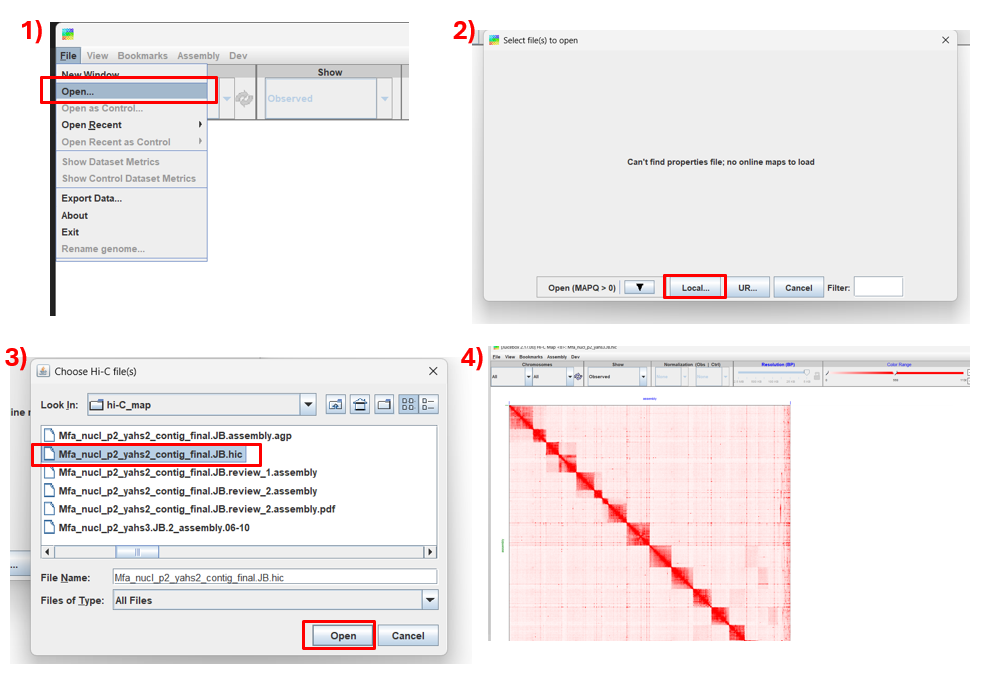
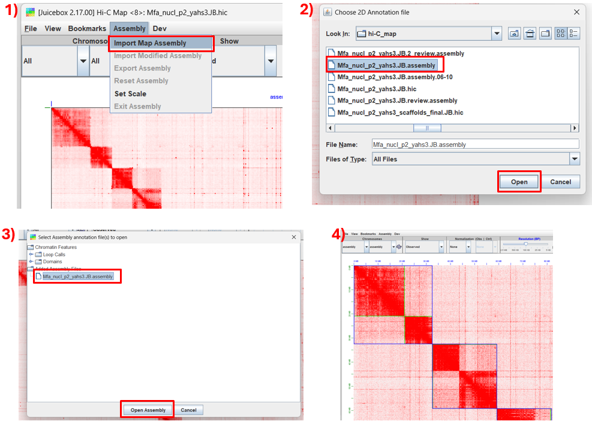
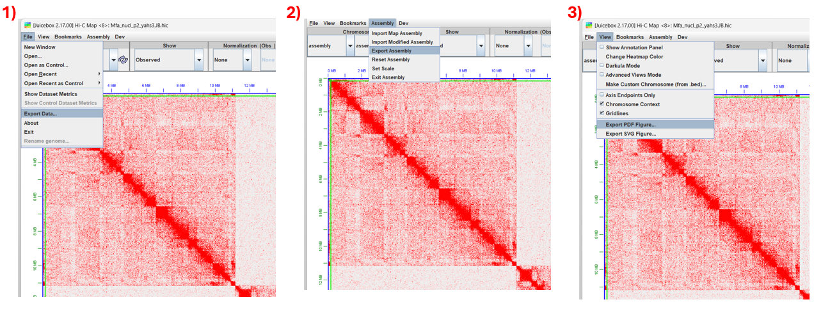

Scaffolding usando Hi-C¶
Resumo
Tutorial prático de scaffolding de genomas a partir de dados de Hi-C. Neste tutorial, cobrimos todo o pipeline: alinhamento, scaffolding, construção do mapa de contato, edição do mapa de contato, exportação e avaliação.
Autor: Dr. Leonardo C. J. Corvalan Instituição: Laboratório de Genética & Biodiversidade (LGBio) — ICB/UFG Contato: lcjocorvalan@gmail.com Última atualização: Julho de 2026
Objetivos de aprendizagem¶
Ao final deste curso, você será capaz de:
- Realizar scaffolding de um genoma
- Avaliar qualidade do scaffolding
- Criar mapas de contato e editá-los
- Exportar o resultado em formato FASTA
Carga horária estimada¶
~3 horas
Pré-requisitos¶
| Item | Detalhes |
|---|---|
| Curso anterior | Bash / Linux para bioinformática |
| Biologia molecular | Conceitos de sequenciamento, genoma, contig, scaffold |
| Softwares | SRA Toolkit, bwa, samtools, PicardCommandLine, QUAST, yahs, juicer_tools, Juicebox |
| Recurso | Servidor Linux com ≥ 32 GB de RAM, ≥ 16 threads e ≥ 50 GB de armazenamento. |
Programas instalados no computador pessoal
Para a etapa de visualização dos dados, será necessário instalar localmente o programa Juicebox. Mais instruções estão descritas na Etapa 7.
Compatibilidade com outros servidores
Este pipeline foi desenvolvido e testado no servidor de Bioinformática do LGBio (ICB/UFG). Ao reproduzi-lo em outro ambiente, podem ser necessários ajustes em caminhos de instalação, gerenciadores de ambiente (conda, module load), versões de software e parâmetros de memória/threads.
Dados do exercício¶
Os dados utilizados neste tutorial são provenientes de uma amostra de Saccharomyces cerevisiae, sequenciada utilizando a enzima de restrição DpnII por meio do protocolo Hi-C. Os dados são referentes ao projeto: https://www.ncbi.nlm.nih.gov/geo/query/acc.cgi?acc=GSE227687.
Referência
Fouziya S, Krietenstein N, Mir US, Mieczkowski J, Khan MA, Baba A, Dar MA, Altaf M, Wani AH. Genome wide nucleosome landscape shapes 3D chromatin organization. Sci Adv. 2024 Jun 7;10(23):eadn2955. doi: 10.1126/sciadv.adn2955
Etapa 1 — Obtenção dos dados¶
Os dados estão disponíveis no ENA e no SRA. Mostramos duas opções: via SRA Toolkit (controlado e robusto) e via wget direto do ENA (mais simples).
mkdir 0.DadosBrutos
ln -s /media/lgbio-nas1/lcorvalan/Hic_cafe/hic_scaffolding/0.DadosBrutos/sacCer3_hic20_1.fastq 0.DadosBrutos
ln -s /media/lgbio-nas1/lcorvalan/Hic_cafe/hic_scaffolding/0.DadosBrutos/sacCer3_hic20_2.fastq 0.DadosBrutos
cp /media/lgbio-nas1/lcorvalan/Hic_cafe/hic_scaffolding/0.DadosBrutos/*fasta 0.DadosBrutos/
Etapa 2 — Alinhamento¶
mkdir 1.Alinhamento/
cp /media/lgbio-nas1/lcorvalan/Hic-data/Mfa/Ragtag/arima_map.sh .
bash arima_map.sh 0.DadosBrutos/sacCer3_draft.fasta 0.DadosBrutos/sacCer3_hic20_1.fastq 0.DadosBrutos/sacCer3_hic20_2.fastq sacCer3_draft_alin
mv sacCer3_draft_alin* 1.Alinhamento/
Checklist da Etapa 2¶
- Examine
sacCer3_draft_alin.Hic.bamesacCer3_draft_alin.Hic.bam.stats
Etapa 3 — Crie um index para o genoma¶
Checklist da Etapa 3¶
- Tenho
0.DadosBrutos/sacCer3_draft.fastafbai
Etapa 4 — Scaffolding¶
mkdir 2.Scaffolding
/media/lgbio-nas1/lcorvalan/programas/YaHS/yahs/yahs 0.DadosBrutos/sacCer3_draft.fasta 1.Alinhamento/sacCer3_draft_alin.Hic.bam \
--telo-motif TGGG \
-e GATC \
-o 2.Scaffolding/sacCer3_draft_alin.Hic.yahs.out
Checklist da Etapa 4¶
- Tenho
2.Scaffolding/sacCer3_draft_alin.Hic.yahs.out_scaffolds_final.fa
Etapa 5 — Qualidade¶
mkdir 3.Qualidade/
quast.py -r 0.DadosBrutos/sacCer3_ref.fasta \
0.DadosBrutos/sacCer3_draft.fasta \
2.Scaffolding/sacCer3_draft_alin.Hic.yahs.out_scaffolds_final.fa \
-o 3.Qualidade/quast -t 24 \
--labels "sacCer3_draft,sacCer3_yahs"
Checklist da Etapa 5¶
- Compare as estatísticas geradas pelo Quast.
Etapa 6 — Gerando o mapa de contato¶
samtools faidx 2.Scaffolding/sacCer3_draft_alin.Hic.yahs.out_scaffolds_final.fa
samtools faidx 0.DadosBrutos/sacCer3_draft.fasta
/media/lgbio-nas1/lcorvalan/programas/YaHS/yahs/juicer pre -a -o 2.Scaffolding/sacCer3_draf.JB \
2.Scaffolding/sacCer3_draft_alin.Hic.yahs.out.bin 2.Scaffolding/sacCer3_draft_alin.Hic.yahs.out_scaffolds_final.agp \
0.DadosBrutos/sacCer3_draft.fasta.fai > 2.Scaffolding/sacCer3_draft_alin.Hic.yahs.JB.log 2>&1
# Em seguida, execute:
(java -jar -Xmx200G /home/lgbio/programas/juicer/scripts/juicer_tools.1.9.9_jcuda.0.8.jar pre 2.Scaffolding/sacCer3_draf.JB.txt 2.Scaffolding/sacCer3_draf.JB.hic.part <(cat 2.Scaffolding/sacCer3_draft_alin.Hic.yahs.JB.log | grep PRE_C_SIZE | awk '{print $2" "$3}')) && (mv 2.Scaffolding/sacCer3_draf.JB.hic.part 2.Scaffolding/sacCer3_draf.JB.hic)
Na primeira parte do script, você deve informar o arquivo de índice (.fai)
Checklist da Etapa 6¶
- Tenho
sacCer3_draf.JB.assemblyesacCer3_draf.JB.hic
Etapa 7 — Plotando e editando o mapa de calor de contatos Hi-C¶
Não esquecer de transferir os arquivos para o computador local
7.1 Instalando Juicebox¶
1) Acesse o site https://github.com/aidenlab/Juicebox/wiki/Download 2) Selecione o seu sistema operacional 3) Após baixar o arquivo, prossiga com a instalação
Erro Java
Este programa demanda que o Java esteja instalado em seu computador.
7.2 Carregando dados no Juicebox¶
1) Abra o programa 2) Carregue os dados seguindo os passoso

3) Carregue as informações de contigs e scaffolds
7.3 Editando o mapa de contato¶
Movendo scaffolds e contigs¶
- Mantenha a tecla Shift pressionada e clique no scaffold que deseja mover.
Note que ele ficará selecionado com linhas pretas.
- Mova o cursor até o local onde deseja realocar o scaffold. Quando o cursor estiver no formato de uma seta, clique.
Invertendo scaffolds e contigs¶
- Mantenha a tecla Shift pressionada e clique no scaffold que deseja inverter.
Note que ele ficará selecionado com linhas pretas.
- Dentro da área do scaffold/contig, mova o cursor até o vértice superior direito. Quando o cursor assumir o formato de uma seta circular, clique.
Cortando scaffolds¶
- Mantenha a tecla Shift pressionada e clique no scaffold que deseja cortar.
Note que ele ficará selecionado com linhas pretas.
- Sobre a diagonal principal, mova o cursor até o ponto onde deseja realizar o corte. Quando o cursor assumir o formato de uma tesoura, clique.
Juntando scaffolds¶
- Os scaffolds que deseja unir devem estar posicionados um ao lado do outro.
- Mova o cursor até a extremidade onde os dois scaffolds se encontram. Quando o cursor mudar de formato, clique.
7.4 Exportando dados¶
1) Exportar matriz 2) Exportar assembly 3) Exportar figura

Etapa 8 — Convertendo para FASTA¶
Transfira o arquivo .assembly para o servidor.
Convertendo para FASTA¶
/media/lgbio-nas1/lcorvalan/programas/YaHS/yahs/juicer post -o 2.Scaffolding/sacCer3_draf.JB.out 2.Scaffolding/sacCer3_draf.JB.review.assembly 2.Scaffolding/sacCer3_draf.JB.liftover.agp 0.DadosBrutos/sacCer3_draft.fasta
O arquivo final é:
2.Scaffolding/sacCer3_draf.JB.out.FINAL.fa"
Etapa 9 — Qualidade final¶
mkdir 3.Qualidade/
quast.py -r 0.DadosBrutos/sacCer3_ref.fasta \
0.DadosBrutos/sacCer3_draft.fasta \
2.Scaffolding/sacCer3_draft_alin.Hic.yahs.out_scaffolds_final.fa \
2.Scaffolding/sacCer3_draf.JB.out.FINAL.fa \
-o 3.Qualidade/quast -t 24 \
--labels "sacCer3_draft,sacCer3_yahs,sacCer3_JB"
Parabéns! Você finalizou esta etapa!¶
Que a Força esteja com você! 🚀
Licença¶
Este tutorial é distribuído sob CC BY 4.0. Reutilize com atribuição.
Reportar problemas¶
Encontrou erro, comando obsoleto, ou tem sugestão? Abra uma issue no GitHub.